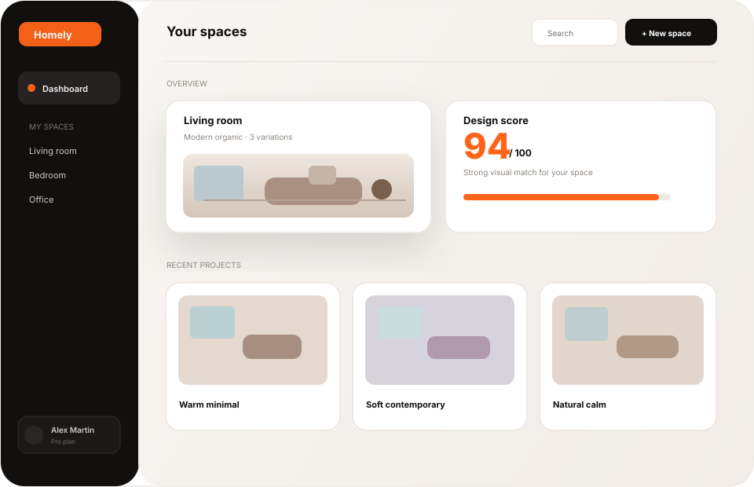

01
Ajoutez votre pièce
Une photo de votre intérieur suffit pour commencer à travailler sur du concret.
Importez une photo de votre pièce et explorez des directions de décoration adaptées à votre espace, votre style et votre quotidien.

Pas besoin de savoir exactement quoi acheter ou où placer chaque meuble. Commencez par ce que vous avez déjà.
Une photo de votre intérieur suffit pour commencer à travailler sur du concret.
Explorez des styles et des ambiances qui correspondent à votre espace.
Gardez vos meilleures idées et avancez avec une vision claire de votre projet.
« J'ai enfin pu visualiser plusieurs styles avant de toucher à mon salon. C'est exactement ce qu'il me manquait. »
« Le plus intéressant, c'est de partir de ma pièce réelle. Le résultat paraît beaucoup plus concret. »
« J'étais bloquée entre plusieurs idées. En quelques variations, j'ai trouvé la direction que je voulais. »
« Homely donne une vraie base pour réfléchir. On arrête de tout imaginer dans sa tête. »
« J'ai enfin pu visualiser plusieurs styles avant de toucher à mon salon. C'est exactement ce qu'il me manquait. »
« Le plus intéressant, c'est de partir de ma pièce réelle. Le résultat paraît beaucoup plus concret. »
Tout ce qu'il faut savoir avant de commencer à repenser votre intérieur.
Ajoutez une photo de votre pièce, choisissez une direction de style et explorez des propositions pensées autour de votre espace.
Non. Homely vous aide à explorer des possibilités, même lorsque vous ne savez pas précisément par où commencer.
Oui. Testez plusieurs directions visuelles avant de choisir celle qui vous correspond le mieux.
Oui. L'expérience est pensée pour rester fluide sur téléphone, tablette et ordinateur.
Une photo suffit pour passer de l'idée au visuel.
Entrer dans Homely →